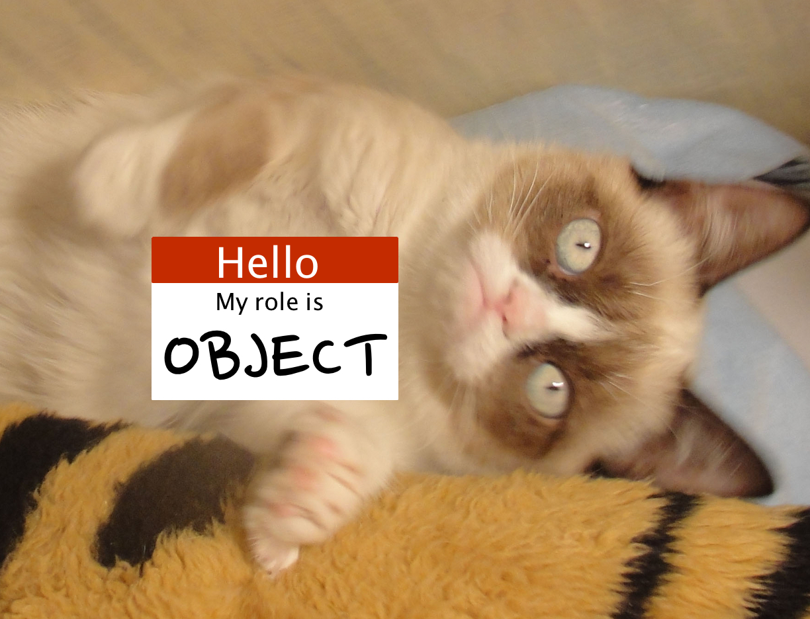
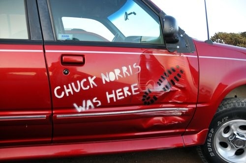
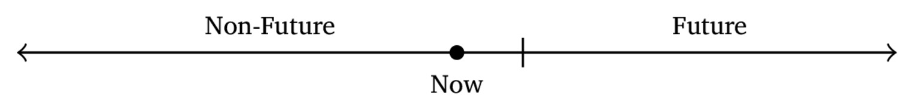
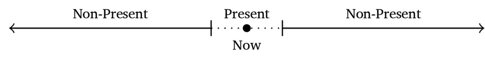
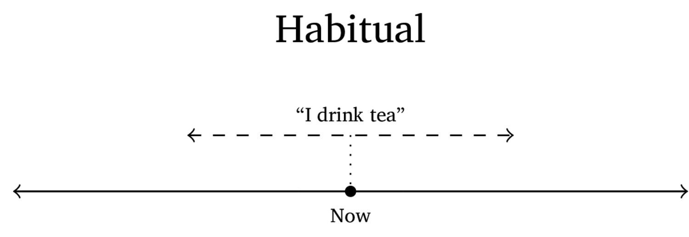
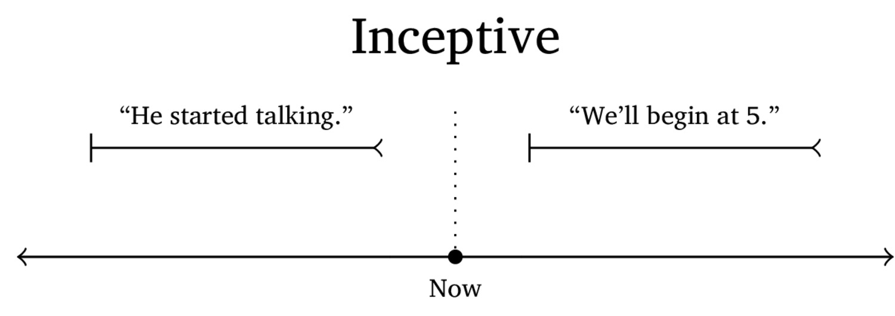
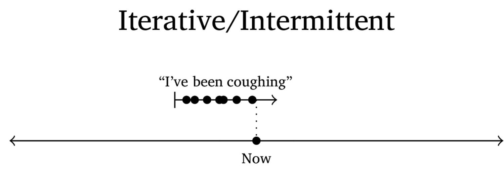

Agreement
Tense
Aspect
Mood
Agreement
Tense
Aspect
Mood
Other verbal meanings
Marks the identity of the ‘actors’ and their roles on the verb itself
Also known as ‘Concord’
This is helpful for marking grammatical relations!
Yo veo el gato
1sg see.1sgsubj el cat
I see the cat
The arguments aren’t marked
… but the verb (and ordering) lets us know who did it!
Michael Bay hizo peliculas malas
Michael Bay make.3sgsubj.past movie-pl bad-pl
“Michael Bay made bad movies”
We know that the plural argument did it!
Veo el gato (rather than ‘yo veo’)
Tiene una tiza. ‘He/she has a chalk’
… but in English, *Has a chalk.
Person marking (1sg, 2sg, etc)
Number marking (singular, plural, etc)
Gender marking (masc, fem, neuter)
Noun class
New vs. old information markers
| ### Will-NOM see-3sg CAT-ACC |
 |


squirrele eta acornu
squirrel.NOM eat acorn.ACC
“The Squirrel ate the Acorn”
“This is case”
“This is agreement”
kula-knas Michael Bay Will
judge-object.is.evil Michael Bay Will
“Will judges Michael Bay”
“This is case”
“This is agreement”

(OK, Sorry, but a bit of humor is helpful before things get tense)
Represents the relationship of the event described to another temporal reference point





Tenses for yesterday, tomorrow
Tenses for next year, last year
Tenses for smaller within-day periods
… but tense always marks time of action relative to a reference!
… which is different from …
Aspect marks the temporal nature and boundedness of described events.
There are many different types of aspect which can be marked
Aspects are often coupled with tense, but don’t need to be!
Tense and aspect are not the same thing!








Sometimes, aspect is marked on verbs
Sometimes, different verbs have inherent aspect
Sometimes, other verbs are used
They’re all gonna have this same feeling of describing the temporal boundedness and structure of an event
Grammatical functions which encode the speaker’s attitude about the event being described
“Is it actually happening, or not?”
“I went to the park” vs. “Had I gone to the park…”
Indicative is the only realis mood in most languages
Used for factual statements
This is the default
“Will is flailing his arms around”
Used for imaginary or hypothetical events
“If a pizza were to appear, I would ensure that it
Maria comería si
This event depends on some other situation being true
“I
Maria
Something that’s more likely than subjunctive or conditional
“This is probably going to happen”
Mood is about speaker attitude
Epistemic is even weaker, ‘this is actually possible.’
Reports events without confirming them
“Andres was at the park.”
“I saw him there myself”
“Amber said he was there”
Turkish o gitti vs. o gitmiş
Imperatives issue commands, make requests, and give prohibitions
“
“
Jussive issues commands to a third person, or generally
Expresses the speaker’s belief that X should occur
“Will should stop eating donuts”
Optative - Marks hopes, requests and wishes
Interrogative - Marks asking a question explicitly
… and plenty more!
Active vs. Passive voice
Reflexive markers
Marks that the subject and the object are the same
“I bathed myself”
Causative markers
Reciprocal markers
Transitivizing markers
Negation markers
Directional markers
Pronouns
Noun incorporation
Verbs take lots of morphology
Agreement shows connections between the verb and the arguments
Tense shows the temporal position of events
Aspect talks about their temporal structure and boundaries
Mood gives the speaker’s attitude about them
There’s more to verbal morphology
How do we elicit these contrasts?
Then, derivation!